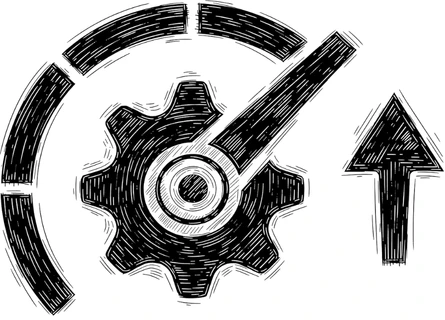

Ottimizzazione Sito Web
Un secondo di attesa in più si paga in visite perse: Google lo misura e i clienti lo sentono ancora prima di aver letto una parola.
Nessuno protesta per una pagina lenta. Torna indietro e apre quella dopo.
Misuriamo dove si perdono i secondi — immagini, script, hosting, percorso — e li recuperiamo uno alla volta, con il prima e il dopo alla mano.

Il sito è bello. Su una connessione mobile, però, ci mette sei secondi.
Chi apre il tuo sito dal telefono, in mezzo alla strada e con una tacca di segnale, non aspetta: se la pagina resta bianca torna ai risultati e prova il nome successivo. Il contenuto può anche essere il migliore del settore, ma non arriva a leggerlo nessuno.
Le cause sono quasi sempre le stesse tre: fotografie caricate a piena risoluzione, plugin accumulati in sette anni di aggiornamenti e un hosting economico condiviso con altri cento siti. Il conto si paga sul posizionamento e sulle richieste, anche quando la grafica è impeccabile.
Come si recuperano quei secondi
Audit tecnico
Misuriamo Core Web Vitals e tempi reali su telefono e desktop, e individuiamo con precisione cosa sta rallentando le pagine.
Interventi in ordine di impatto
Immagini, script, cache e hosting: partiamo da ciò che l'utente sente di più, non da ciò che è più comodo sistemare.
Telefono e accessibilità
Verifichiamo che il sito si usi anche da tastiera, che i contrasti reggano alla luce del sole e che il layout tenga su ogni schermo.
Controlli nel tempo
Impostiamo un monitoraggio periodico, così il plugin installato tra sei mesi non riporta tutto al punto di partenza.
Le domande che arrivano dopo il primo test
Nella pratica sono quasi sempre tre: immagini non ottimizzate, hosting sottodimensionato e troppi script di terze parti. L'audit iniziale lo chiarisce in pochi giorni, numeri alla mano.
Quasi mai: si lavora sulla struttura che hai già. Il rifacimento serve solo quando il tema o l'impianto tecnico sono compromessi alla radice.
Sono le metriche con cui Google misura caricamento, reattività e stabilità visiva di una pagina: pesano sul posizionamento e, prima ancora, su quanti visitatori restano.
Sì: ogni contenuto nuovo e ogni plugin aggiungono peso. Per questo il monitoraggio periodico fa parte del servizio, invece di un intervento una tantum e via.
Misuriamo il tuo sito
Trenta minuti gratuiti per capire se la velocità è davvero il primo problema da risolvere, o se conviene iniziare da un altro.